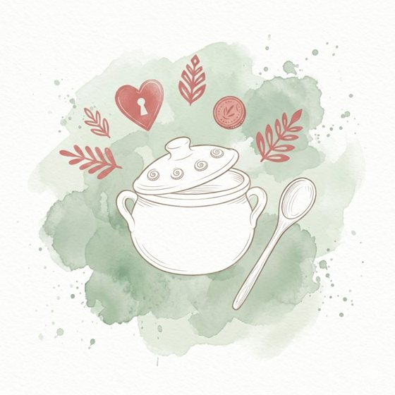
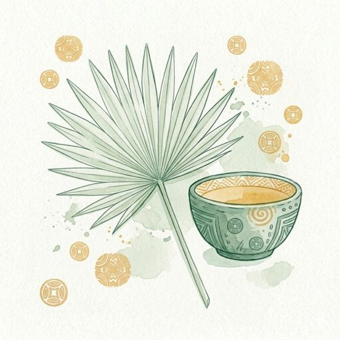
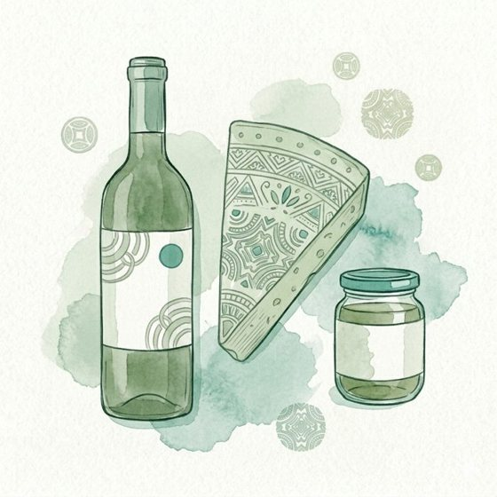
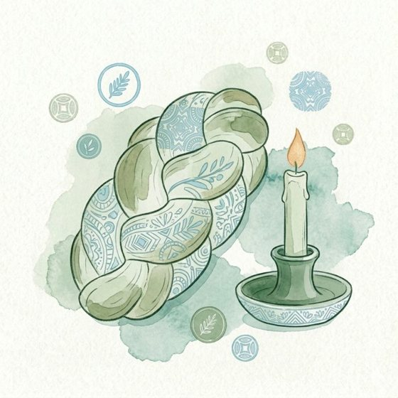

Cozinha · Kitchen
Choose a theme
Everything you need, organised by what matters to you.
Your materials are waiting inside, calibrated to your level. As you progress, we reassess you and unlock the next level across all themes.

General recipes
The essential dishes of the Portuguese table: bacalhau, caldo verde, pastéis de nata, and much more.
Choose this theme →
Lusophone kitchen
From Angola to Brazil to Cape Verde: the diverse flavours of the Portuguese-speaking world.
Choose this theme →
Specialities
Wine, cheese, olive oil, doçaria: the distinctive products of the Portuguese land and table.
Choose this theme →
Traditions
The food culture behind the feast days, the Sunday lunch, and the unwritten rules of the Portuguese table.
Choose this theme →